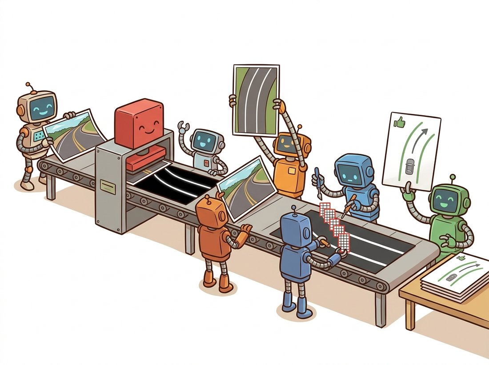
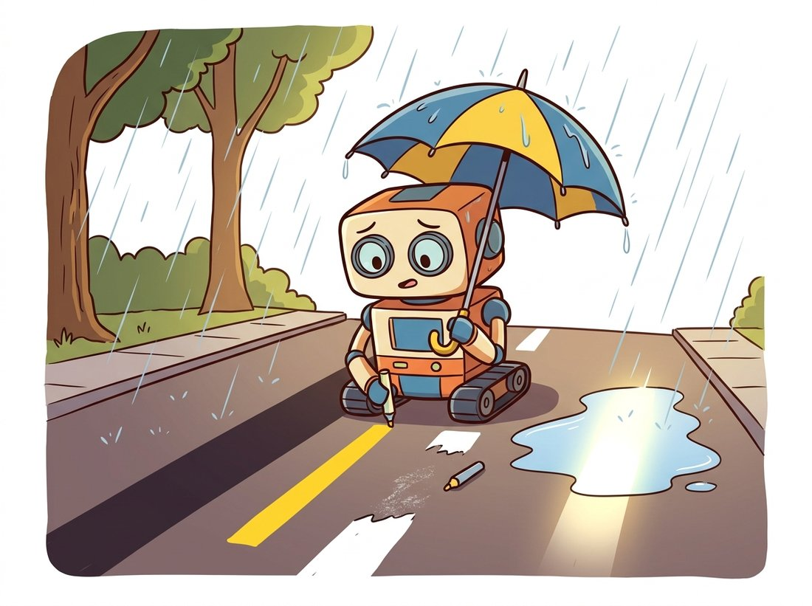

"The lane was clearly marked for two hundred kilometers. Then it rained, the sun came back out, and I learned that I had spent my entire career detecting dry weather."
A Recently Humbled Lane Detector
This section assembles every tool the chapter has built into one working machine: a lane-marking detector that turns a raw dashcam frame into two polynomials, a curvature radius in meters, and a lateral offset a steering controller can act on. The architecture is the one that shipped in early lane-keep-assist systems: threshold gradients and colors into evidence (Section 9.1 and Section 9.2), warp the road into a bird's-eye view with the homography machinery of Chapter 5, localize lane pixels with a voting search in the spirit of Section 9.3, and fit robust quadratics with the discipline of Section 9.4. Every stage is a hand-written prior about how roads behave, which makes the pipeline fast, debuggable, and exactly as fragile as its assumptions.
The previous section closed the chapter's toolbox: we can detect structure by voting and measure it by fitting, even when most of the evidence is contaminated. What remains is the engineering question: do the pieces compose into a system that does something useful? Lane-marking detection is the canonical test because it needs every piece at once, and because its failure modes, catalogued deliberately at the end, are the best argument anyone has ever made for Part III. The illustration below previews the pipeline as a staged assembly line, where each station performs one simple hand-written prior and passes its product to the next.

1. The Assignment: From Dashcam Frame to Steering Geometry Beginner
The input is a forward-facing camera frame, say $1280 \times 720$ pixels at 30 frames per second. The output a lane-keeping controller wants is compact: the lane's two boundary markings as curves in road coordinates, the radius of curvature of the lane ahead in meters, and the car's lateral offset from the lane center. Note what is being asked: not "which pixels are paint" but "where is the lane, as a measurable curve in the world." That is the chapter's pixels-to-geometry trajectory, pushed one step further into physical units.
Figure 9.5.1 shows the pipeline. One precondition is handled offstage: the frame must be undistorted, because consumer lenses bend straight lane lines into gentle arcs near the image border, and a curve fitter cannot tell optical bending from road curvature. Chapter 12 builds the calibration that removes lens distortion; here we assume it has been applied. Everything else in the figure is this chapter, plus one homography from Chapter 5.
A word on budget: at 30 frames per second the pipeline has 33 milliseconds per frame, shared with everything else the vehicle computer does. Every operation below is a thresholded filter, one warp, a histogram, or a small linear solve; on one CPU core the whole pipeline runs in a few milliseconds, which is why Section 9.1 made a point of the libraries running their kernels separably in optimized C. This arithmetic is much of why classical lane detection shipped.
2. Stage 1: Thresholding for Evidence Intermediate
The first stage converts the frame into a binary mask: 1 where a pixel plausibly belongs to lane paint, 0 elsewhere. We combine two independent kinds of evidence, because each one alone has a famous failure mode.
Gradient evidence. Lane markings in a forward-facing camera run roughly toward the vanishing point, so they are close to vertical in the image and their intensity changes are close to horizontal. An $x$-direction Sobel filter, exactly the instrument calibrated in Section 9.1, responds to lane edges while staying quiet on horizontal structure like shadow lines cast across the road. But recall the ridge profile from Section 9.1: a paint stripe is a thin bright line, so the gradient fires on both flanks and returns every marking as a double line. This is the annoyance Section 9.1 promised we would deal with directly; the fix is the second channel.
Color evidence. Lane paint is engineered to be visible, which in color terms means saturated white or yellow. The S channel of the HLS representation from Chapter 1 captures exactly this: paint stays high-saturation as overall brightness drops into shade, where raw RGB thresholds collapse. A fixed threshold on S, chosen with the histogram-reading skills of Chapter 2, lights up the body of each stripe, not just its flanks, so the union of the two channels turns every marking into one solid blob and dissolves the double-line problem; a single morphological opening from Chapter 6 then deletes the speckles both channels produce. The function below implements the whole stage.
# Stage 1 of the lane pipeline: build a binary evidence mask by unioning two
# independent cues, an x-gradient that fires on stripe flanks and an HLS
# saturation threshold that fills stripe bodies, then opening away speckle.
import cv2
import numpy as np
def lane_evidence(bgr):
"""Binary mask of likely lane-paint pixels: gradient OR color."""
gray = cv2.cvtColor(bgr, cv2.COLOR_BGR2GRAY)
sx = cv2.Sobel(gray, cv2.CV_64F, 1, 0, ksize=3) # x-gradient only
sx = np.uint8(255 * np.abs(sx) / (np.abs(sx).max() + 1e-12))
grad = sx >= 35 # fires on both flanks of a stripe
hls = cv2.cvtColor(bgr, cv2.COLOR_BGR2HLS)
color = hls[:, :, 2] >= 120 # S channel: paint stays saturated
mask = (grad | color).astype(np.uint8) * 255
kernel = np.ones((3, 3), np.uint8) # one opening pass kills speckle
return cv2.morphologyEx(mask, cv2.MORPH_OPEN, kernel)
frame = cv2.imread("highway_frame.jpg") # 1280 x 720, lens-undistorted
mask = lane_evidence(frame)
print(f"evidence pixels: {(mask > 0).mean():.1%} of the frame")
# Representative output:
# evidence pixels: 3.4% of the framelane_evidence: the x-direction Sobel fires on both flanks of each paint stripe while hls[:, :, 2] (the saturation channel) fills its body, so grad | color turns every marking into one solid blob; a single cv2.morphologyEx opening then deletes isolated speckles before any geometry runs.Notice what we did not use: the full Canny detector of Section 9.2. Canny's non-maximum suppression thins edges to one pixel, which is ideal when edges are the product but counterproductive here, where we want fat blobs of paint pixels for the histogram search to count. Choosing which tool a stage actually needs, rather than the most sophisticated tool available, is most of pipeline engineering.
3. Stage 2: The Bird's-Eye Warp Intermediate
In the camera view, perspective entangles everything: parallel lane lines converge, lane width shrinks with distance, and a constant-curvature arc projects to a curve whose shape depends on where it sits in the frame. Fitting and measuring in that view means undoing perspective inside the model. The classical move is to undo it in the image instead: warp the road plane to a synthetic overhead view, after which lane lines are near-vertical and parallel, lane width is constant in pixels, and a quadratic $x = Ay^2 + By + C$ is an excellent local model of real road geometry (highways are built from clothoid arcs, which a quadratic tracks closely over a 30 meter window).
The warp is a planar homography, exactly the $3 \times 3$ machinery built in Chapter 5: the road is (assumed) flat, so four point correspondences determine the mapping. Calibration is a one-time manual act: on a frame where the road is known to be straight, mark a trapezoid whose sides lie on the two lane lines, and declare that it should map to a rectangle. The code below performs the warp; Figure 9.5.2 (in the next stage) shows it visually.
# Stage 2: warp the road plane to a synthetic overhead view, so lane lines
# become near-vertical and parallel. A single planar homography from four
# correspondences does it; the inverse is kept for painting results back.
h, w = mask.shape
# source trapezoid: marked once on a straight-road frame, reused forever
src = np.float32([[w * 0.43, h * 0.65], [w * 0.57, h * 0.65],
[w * 0.90, h * 0.96], [w * 0.10, h * 0.96]])
dst = np.float32([[w * 0.25, 0], [w * 0.75, 0],
[w * 0.75, h], [w * 0.25, h]])
M = cv2.getPerspectiveTransform(src, dst) # 3x3 homography
Minv = cv2.getPerspectiveTransform(dst, src) # for painting results back
birds = cv2.warpPerspective(mask, M, (w, h),
flags=cv2.INTER_NEAREST) # keep mask binarycv2.getPerspectiveTransform turns the source trapezoid into the rectangle M, cv2.warpPerspective with INTER_NEAREST keeps the mask strictly binary, and the inverse matrix Minv is computed up front because the final overlay must travel back to the camera view.Solving a homography from four point pairs by hand means building the $8 \times 8$ direct linear transform system and back-substituting, roughly 30 lines of NumPy as constructed in Chapter 5, plus a resampling loop of similar size. cv2.getPerspectiveTransform and cv2.warpPerspective replace it all with two calls, a 30-to-1 reduction: OpenCV solves the linear system stably, walks the output grid through the inverse homography so no holes appear, and interpolates with your chosen kernel. We pass INTER_NEAREST because averaging a binary mask would manufacture gray pixels that are neither evidence nor background.
Two warnings. First, the flat-road assumption is real: crests, dips, and braking pitch tilt the true road plane away from the calibrated one, and the warp answers by bending straight lanes into phantom curves; production systems estimate pitch online. Second, the warp resamples aggressively near the top of the trapezoid, one source pixel smearing across many destination pixels, which is why we threshold before warping rather than after, a choice Exercise 9.5.1 asks you to defend.
4. Stage 3: Sliding-Window Search Intermediate
The warped mask contains lane blobs plus clutter: shadow fragments, asphalt seams, the occasional vehicle. Which evidence pixels belong to the left marking, which to the right, and which to neither? The classical answer starts with a wonderfully cheap idea: sum the mask's columns over the bottom half of the image. A near-vertical marking piles its pixels into a narrow range of columns, so the histogram shows two dominant peaks, and the peaks are the lanes' base positions at the bumper. From each base a stack of fixed-size windows climbs the image, each window recentering on the mean $x$ of the pixels it captures, so the stack tracks the marking as it curves, as Figure 9.5.2 illustrates.
The column-sum histogram is the voting principle of Section 9.3 in its smallest possible form. Fix the line family to "vertical lines $x = b$" and the Hough parameter space collapses from $(\rho, \theta)$ to the single parameter $b$: every evidence pixel casts one vote for its own column, the accumulator is the histogram, and the peaks are consensus winners. The sliding windows then relax the model from "vertical line" to "vertical-ish curve" one band at a time. Seeing the trick as a degenerate Hough transform tells you when it fails (a marking far from vertical smears its votes across columns and the peak dissolves) and what to do about it: restore the missing parameter, or warp the geometry until the degenerate model is true, which is half of what the bird's-eye warp is for.
The implementation below returns the raw pixel coordinates assigned to each marking, ready for fitting. It is deliberately plain NumPy: one histogram, one nonzero, and a short loop over windows.
# Stage 3: assign warped evidence pixels to the left and right markings.
# Bottom-half column sums nominate two base columns (a degenerate Hough
# vote), then stacked windows climb each marking, recentering as it curves.
def sliding_window_search(birds, n_windows=9, margin=80, minpix=50):
"""Collect lane pixels by climbing windows from two histogram peaks."""
hist = birds[birds.shape[0] // 2:, :].sum(axis=0) # bottom-half votes
mid = hist.shape[0] // 2
bases = [int(np.argmax(hist[:mid])), int(np.argmax(hist[mid:])) + mid]
nz_y, nz_x = birds.nonzero() # all evidence pixels
win_h = birds.shape[0] // n_windows
keep = [[], []] # left, right masks
for k in range(n_windows):
y_hi = birds.shape[0] - k * win_h # window bottom
y_lo = y_hi - win_h # window top
for side, x0 in enumerate(bases):
sel = ((nz_y >= y_lo) & (nz_y < y_hi) &
(np.abs(nz_x - x0) < margin))
keep[side].append(sel)
if sel.sum() > minpix: # recenter on the mean
bases[side] = int(nz_x[sel].mean())
out = []
for side in (0, 1):
sel = np.logical_or.reduce(keep[side])
out.append((nz_x[sel], nz_y[sel]))
return out # [(xl, yl), (xr, yr)]sliding_window_search: bottom-half column sums nominate two base positions, nine stacked windows climb each marking, and every window with more than minpix pixels recenters on their mean x so the stack tracks the curve; the function returns the raw (x, y) coordinates for each side, ready for the polynomial fit.
The minpix gate matters more than it looks: a window over a gap in a dashed marking catches almost nothing, and recentering on three noise pixels would fling the stack sideways; by refusing to recenter on thin evidence, the stack coasts straight through dashes, the correct prior for road paint. On video there is a further shortcut: after a good fit, the next frame skips the histogram and windows and harvests evidence pixels within a margin of the previous polynomial. Exercise 9.5.2 builds that fast path and the sanity gates that decide when to fall back to the full search.
5. Stage 4: Polynomials, Curvature, and Meters Advanced
Now the measurement step. We fit each marking with the quadratic that Section 9.4 promised, in the lane-friendly orientation $x = Ay^2 + By + C$: $x$ as a function of $y$, because the markings are near-vertical and a $y$-on-$x$ fit would hit exactly the steep-line pathology that Section 9.4 dissected. Orienting the model along the data is the cheapest robustness trick in the entire pipeline.
The fit happens twice: once in pixel units for drawing the overlay, and once in metric units for the controller. The unit conversion is a calibration fact about the warp: our destination rectangle places the lane edges $0.5\,w = 640$ pixels apart, and a standard highway lane is $3.7$ meters wide, so one warped pixel is $3.7/640$ meters in $x$; the trapezoid was marked to cover roughly 30 meters of road, so one pixel is $30/720$ meters in $y$. With metric coefficients in hand, the radius of curvature of $x(y)$ at the bumper line $y_0$ is the standard formula from calculus:
$$ R \;=\; \frac{\bigl(1 + (2Ay_0 + B)^2\bigr)^{3/2}}{\lvert 2A \rvert}, $$
and the lateral offset is the difference between the image center (where the camera, and approximately the car, sits) and the midpoint of the two fitted curves at the bumper, scaled to meters. The code below completes the pipeline.
# Stage 4: turn the captured lane pixels into steering geometry. Fit the
# quadratic x = Ay^2 + By + C twice (pixels for drawing, meters for control),
# then read off curvature radius and lateral offset in physical units.
XM = 3.7 / 640 # meters per warped pixel in x: lane width 3.7 m = 640 px
YM = 30.0 / 720 # meters per warped pixel in y: warp covers ~30 m of road
(xl, yl), (xr, yr) = sliding_window_search(birds)
left_px = np.polyfit(yl, xl, 2) # x = A y^2 + B y + C, in pixels
right_px = np.polyfit(yr, xr, 2)
left_m = np.polyfit(yl * YM, xl * XM, 2) # same fit, metric units
A, B, _ = left_m
y_car = (h - 1) * YM # evaluate at the bumper line
radius = (1 + (2 * A * y_car + B) ** 2) ** 1.5 / abs(2 * A)
lane_mid = (np.polyval(left_px, h - 1) + np.polyval(right_px, h - 1)) / 2
offset = (w / 2 - lane_mid) * XM # + means car is right of center
print(f"radius of curvature {radius:7.0f} m lateral offset {offset:+.2f} m")
# Representative output:
# radius of curvature 886 m lateral offset -0.12 mnp.polyfit fits the same quadratic twice (pixel units for drawing, metric units via XM and YM for measurement), the curvature radius comes from the analytic formula evaluated at the bumper line, and offset compares image center with lane center under the meters-per-pixel calibration.On a clean frame, plain least squares is the right fitter, because the sliding windows have already done the robustness work: they are a membership filter, the two-step recipe of Section 9.4 wearing different clothes. On a bad frame the corridor itself can be captured: Section 9.4 warned that most thresholded pixels can belong to shadows and asphalt texture rather than paint, and a window stack can lock onto a shadow band running beside the marking. Production pipelines therefore add defenses: sanity gates that reject a frame whose two fits are not roughly parallel, whose implied lane width is wrong at any of three heights, or whose left and right curvatures disagree wildly; temporal smoothing that coasts on the last good fit through rejected frames, a job done properly by the Kalman filters of Chapter 15; and, on the worst frames, a RANSAC fit over the window centroids, exactly as built in Section 9.4.
This exact architecture was an assignment in Udacity's self-driving-car program in 2017, and GitHub now hosts thousands of repositories named some variation of "advanced lane finding," many sharing trapezoid coordinates inherited from the same starter code. The durability is no accident: every intermediate product is an image you can look at, so every bug is visible. Few debugging experiences in vision are as satisfying as watching your window stack march confidently up a guardrail.
Who: A robotics engineer at a warehouse-automation company whose autonomous tow tractors follow yellow floor tape between picking stations.
Situation: The guidance stack was this section's pipeline almost verbatim: color thresholding for the tape, a fixed bird's-eye homography (warehouse floors are genuinely flat, so the warp's core assumption holds better than on any road), sliding windows, and a quadratic fit feeding a pure-pursuit controller at 20 Hz on an embedded board with no GPU.
Problem: Under midday skylights, specular glare on the polished concrete fired the color threshold in broad streaks, and the window stack occasionally abandoned the tape to follow a glare ribbon. In high-traffic aisles the tape was scuffed gray in patches, the histogram peak vanished, and the search seeded on clutter.
Decision: Three changes, all from this chapter's toolbox: the threshold became a union of saturation and x-direction gradient channels, so scuffed tape with intact edges still produced evidence; sanity gates (tape width at three heights, curvature below the vehicle's minimum turn radius) rejected bad fits in favor of coasting on the previous one; and seeding was restricted to a corridor around the last accepted polynomial.
Result: Guidance interventions fell from roughly one per vehicle-shift to one per week across the fleet, with no hardware change and a budget that stayed under 8 milliseconds per frame. A candidate segmentation network was more accurate on worn tape but missed the latency budget on the existing boards; the classical pipeline kept the job.
Lesson: Stage-by-stage transparency was the operational asset: every incident could be replayed and attributed to a specific stage, and every fix was a targeted change to that stage. A monolithic learned model would have offered better ceiling accuracy and far worse attributability on a fleet that needed Tuesday's bug fixed by Thursday.
6. When It Breaks, and What Replaced It Intermediate
Run this pipeline on a sunny highway and it looks unreasonably good. Run it on the full diversity of real driving and its failure taxonomy emerges clearly, because each failure is a violated assumption you can name (the illustration below sketches three of these named assumptions breaking at once):

- Shadows and glare violate the threshold stage: a tree line casts high-contrast edges that out-vote faded paint, and wet asphalt mirrors the sky into the saturation channel.
- Worn or absent paint violates the evidence assumption outright; no threshold recovers markings that are not there, while human drivers infer the lane from curbs, traffic, and habit.
- Hills and braking pitch violate the flat-road homography, bending straight lanes into phantom curves.
- Lane changes and merges violate the two-peak histogram model precisely when geometry matters most.
- Unusual markings (double yellows, botts' dots, temporary construction lines painted over old ones) violate the one-stripe-per-side prior.
The CULane benchmark formalizes exactly this taxonomy, with test categories for shadow, glare, night, no-line, and curve frames; classical pipelines score respectably on the clean categories and collapse on the rest. That gap is the empirical case for learning the evidence rather than hand-coding it: the convolutional networks of Chapter 19 learn their own thresholds from data (their first layers rediscover oriented gradient filters on their own), and the segmentation machinery of Chapter 24 replaces threshold-and-search with a per-pixel classifier trained on tens of thousands of annotated frames. What deep models did not discard is the geometry: outputs are still fit with curve models and evaluated in curvature and lateral offset. The vocabulary this pipeline defined became the field's evaluation language.
Learned lane detection has split into two threads. The perception thread refines frame-level detectors: CLRerNet (Honda and Uchida, WACV 2024, arXiv:2305.08366) tops CULane with cross-layer refinement and a LaneIoU loss aligned with how lane quality is actually scored, while row-anchor designs descended from Ultra-Fast Lane Detection remain the budget option at hundreds of frames per second. The mapping thread absorbs lane detection into online HD-map construction: LaneSegNet (Li et al., ICLR 2024, arXiv:2312.16108) predicts lane segments with topology on the OpenLane-V2 benchmark, and MapTRv2 (Liao et al., IJCV 2024, arXiv:2308.05736) regresses vectorized lane polylines directly in a bird's-eye-view representation produced by a learned view transformation rather than a calibrated homography. Note that last clause: the warp survived, because reasoning about road geometry is still easiest in the overhead frame. The pipeline's stages were replaced one by one; its coordinate system won.
This closes the chapter's arc: we began with a philosophical question (what is an edge?) and ended with a machine that converts two million pixels into a curvature radius a controller can steer by, exercising gradients as instruments, voting as detection, consensus as robustness, and fitting as measurement along the way. The next chapter changes strategy: instead of long anonymous contours grouped by geometric priors, Chapter 10 finds compact, recognizable points and gives each a fingerprint descriptor, the move that makes two photographs of the same scene comparable; the RANSAC you now know travels there immediately.
Every stage of Figure 9.5.1 encodes at least one assumption about the world. (a) List one prior per stage and, for each, a concrete driving situation that violates it (Section 6 contains several; find at least two not listed there). (b) The pipeline thresholds before warping. Explain what would go wrong if the order were reversed, considering both interpolation (what does warpPerspective do to gray edge ramps near the top of the trapezoid?) and the Sobel response to perspective-stretched pixels. (c) The histogram seeding assumes exactly two peaks; propose a modification that handles a three-lane view where the car straddles a lane change, and state what new ambiguity your modification introduces.
Extend the pipeline for video. (a) Implement search-from-prior: given the previous frame's left_px and right_px, select evidence pixels within ±80 pixels of each polynomial and refit, skipping the histogram and windows entirely. (b) Add sanity gates: reject a frame if the lane width at $y \in \{h-1, h/2, 0\}$ leaves the range 500 to 780 warped pixels, or if the left and right quadratic coefficients $A$ differ by more than a factor of 3 when both magnitudes exceed a small floor. On rejection, reuse the last accepted fit; after three consecutive rejections, fall back to the full sliding-window search. (c) Run both paths on a short dashcam clip and report the fast path's speedup and the number of fallback events. Where in the clip do they cluster?
The radius formula divides by $\lvert 2A \rvert$, and on a straight road $A \to 0$. (a) Propagate a small perturbation $\delta A$ through the formula to show that the relative error of $R$ blows up as the road straightens, and explain why production systems report curvature $\kappa = 1/R$ instead of radius. (b) Verify empirically: bootstrap the fit by resampling the window centroids 1,000 times on a gently curved synthetic lane ($R = 1{,}000$ m) and on a nearly straight one ($R = 20{,}000$ m), and report the spread of $R$ and of $\kappa$ for both. (c) Connect the result to Section 9.4: which is the better-conditioned quantity to feed a Kalman filter in Chapter 15, and why?